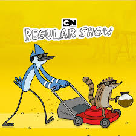
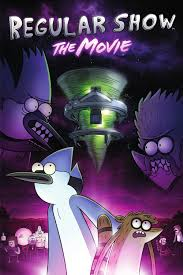

Cultural Impact
Critical Acclaim: "Regular Show" was praised for its creative storytelling, humor, and ability to appeal to multiple age groups. It was nominated for several awards, including Primetime Emmys, and won a Primetime Emmy Award in 2012 for the episode "Eggscellent.
Broad Audience Appeal: Although targeted primarily at children, its blend of retro references, surreal situations, and mature humor made it a hit with teens and adults as well.
Influence on Animation: "Regular Show" helped pave the way for more experimental animated series that mix everyday life with surreal and imaginative storylines.
The Movie
In 2015, "Regular Show: The Movie" was released, expanding on the show's typical format. The plot involves time travel and an epic battle to save the universe, with Mordecai and Rigby at the center. The movie provides a larger-scale adventure while keeping the core elements that made the show so popular.
Closure
"Regular Show" stands out as one of the most unique animated series of its time, blending slice-of-life comedy with absurd, often supernatural adventures. Its lovable, quirky characters and strange, yet relatable, plots have made it a beloved show that resonates with fans even after its conclusion.